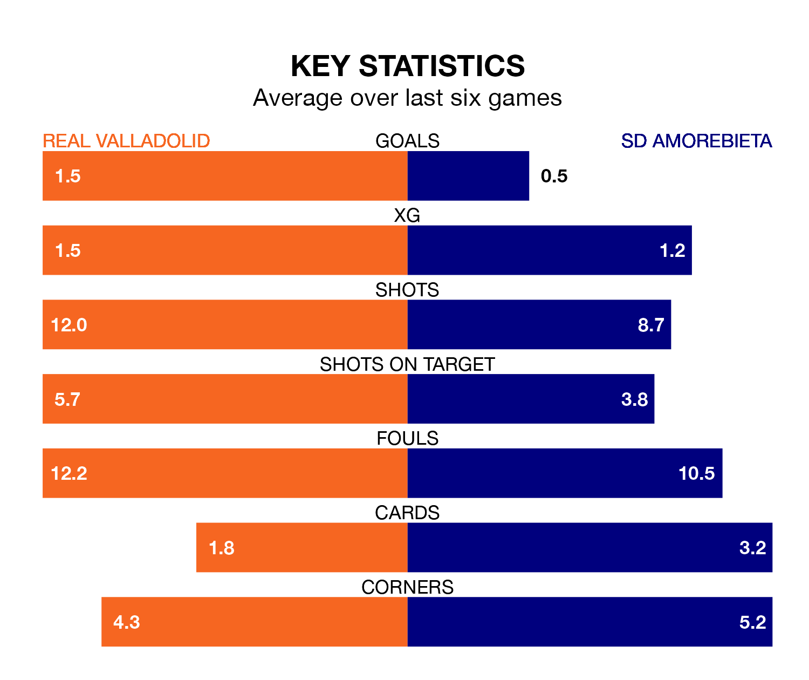

Real Valladolid host SD Amorebieta in Saturday's match at the Estadio Municipal José Zorrilla looking to bounce back from defeat last time out in the Segunda División.
Real Valladolid, who sit third in the league after 18 games, fell to a 2-1 away defeat to Levante UD on December 2.
They face an Amorebieta side who also lost their last match, a 1-0 defeat to Burgos CF, and who sit 20th in the table.
With 15 goals in 18 games so far this season, Amorebieta are the league's joint-third-lowest scorers with 0.8 goals per game. And they are conceding more than average, letting in 26 goals at a rate of 1.4 per game.
Valladolid, meanwhile, are above average scorers, with 1.3 goals per game, compared to a league average of 1.2. They have conceded 1.1 goals per game.
Real Valladolid are in mixed form in the Segunda División, with three wins and a draw from their last six games.
With a win and a draw over that period, SD Amorebieta's form is much worse – they have taken four points from 18, compared to the hosts' 10.
The away team's Josué Dorrio Ortega is among the league's most creative players, racking up five assists in 18 appearances so far this season, and holding fourth spot in the Segunda División's assist charts.
For Valladolid, Iván Sánchez and Stanko Jurić have set up the most goals, having laid on three assists apiece to date.
